News
60 articles
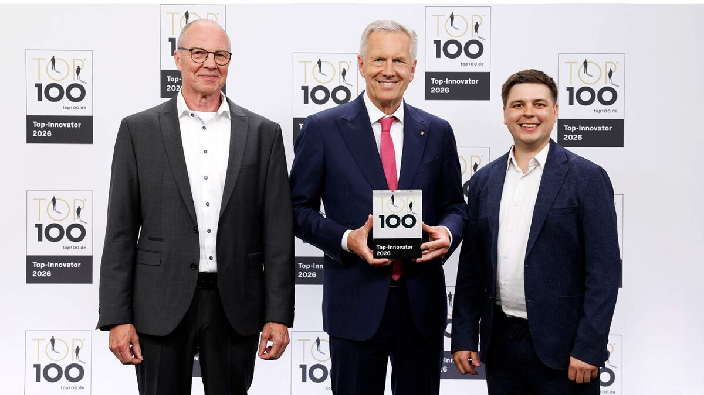
16 July 2026
Brasseler Receives TOP 100 Award in Heidelberg
Brasseler received its TOP 100 award at the German SME Summit in Heidelberg. The Lemgo-based family-owned company was honored with the prestigious innovation seal for the third time in 2026, once again ranking among Germany’s most innovative small and medium-sized enterprises.
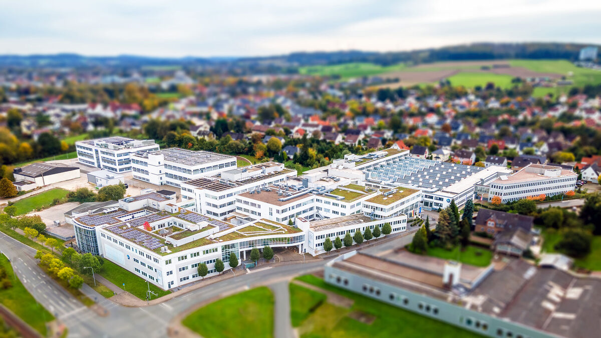
07 May 2026
Medical technology group Brasseler releases preliminary results for fiscal year 2025
The medical technology group Brasseler has released its preliminary results for the 2025 fiscal year. In a challenging economic environment, the company generated net revenue of just under 236 million euros. After adjusting for currency effects, revenue growth stood at 1.0%, falling short of expectations. Rising costs, increasing competition, and international political influences shaped business performance in 2025. Brasseler used the year to consistently pursue strategic initiatives. These showed initial promising results in selected markets. In 2026, management expects further positive momentum for competitiveness, efficiency, and customer focus. However, ongoing geopolitical crises pose risks.
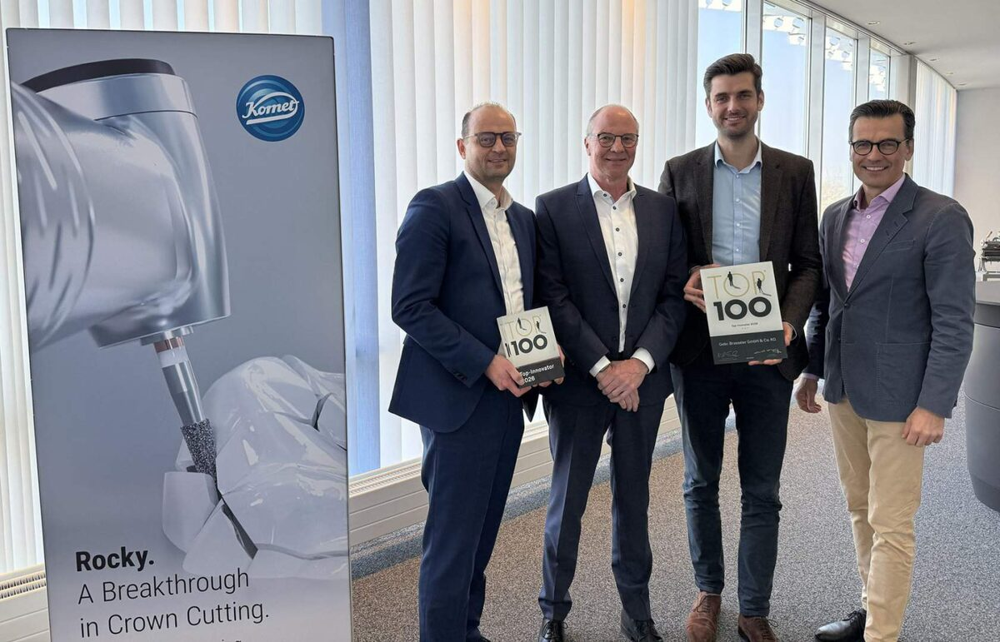
13 March 2026
Brasseler has been awarded the TOP 100 Innovation Seal for the third time
The medtech company Brasseler is once again among Germany’s most innovative medium-sized companies in 2026. Following awards in 2022 and 2023, the Lemgo-based family business has received the prestigious TOP 100 Innovation Seal for the third time.
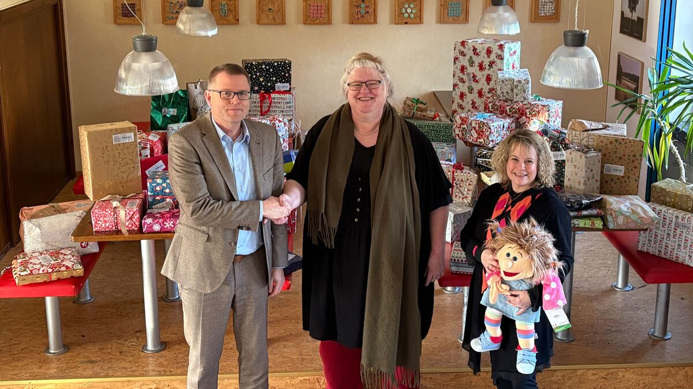
18 December 2025
121 Christmas parcels, a hand puppet and a €3,000 donation for the Westfälisches Kinderdorf e. V. in Barntrup
A strong sign of solidarity: Brasseler employees showed their commitment to the Westphalian Children’s Village in Barntrup in a special way during the pre-Christmas period. At their own expense, they fulfilled the children’s wish lists and packed a total of 121 gifts – more than ever before in the “Christmas parcel campaign.” The parcels were supplemented by a hand puppet that can be used in therapy sessions and a donation of €3,000 from the company for the ongoing projects of the Westfälisches Kinderdorf e. V. in Barntrup.
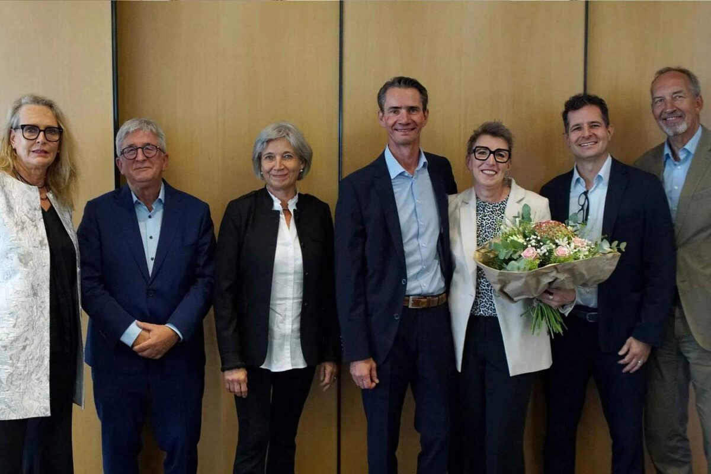
16 December 2025
From his first day at work to today Brasseler bids farewell to Klaus Rübesamen as he retires after more than 44 years
After more than four decades with the company, Klaus Rübesamen, Managing Director of Gebr. KG for many years, went into retirement and was bid farewell at a send-off ceremony. The event at the company headquarters in Lemgo, which was attended by numerous external and internal guests, offered a look back on a long professional career and many years of cooperation.
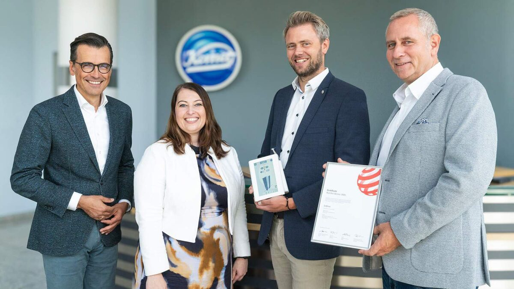
19 September 2025
Brasseler wins the Red Dot Design Award 2025: Innovation with a system
Brasseler is setting new standards in dentistry: the Lemgo-based family business has received the Red Dot Design Award 2025 for the new EnDrive – an innovation developed by the product brand Komet Dental. The EnDrive shows that the brand Komet Dental has long been doing by far more than just manufacturing traditional dental instruments: Komet Dental is all about intelligent developments that make day-to-day work in dental practices easier and offer patients a better treatment outcome.
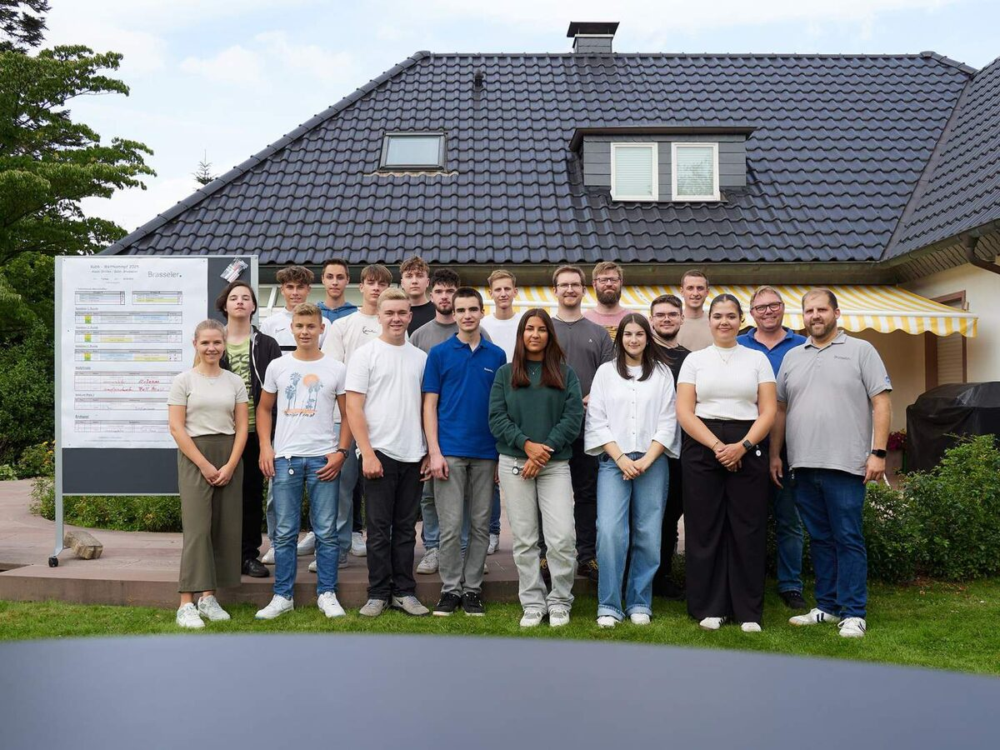
05 September 2025
A warm welcome to this year’s new trainees: Come and join us, get involved and grow!
For 15 new talents, August marks the start of their professional careers at Brasseler: 13 trainees and two students on dual study programs started their training with a structured welcome week. They got to know the company, gained insights into key processes and bonded as a group. Later in the month, they expanded their knowledge in a hands-on workshop lasting several days. This creates an environment that combines professional development and personal orientation right from the start.
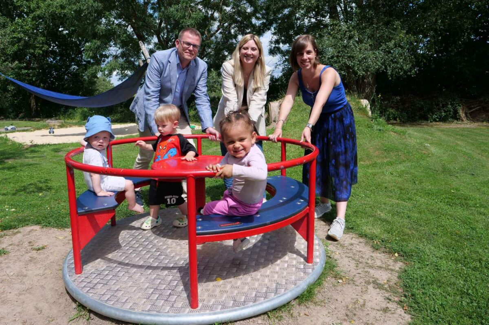
03 July 2025
Children collect for children: Brasseler donates carousel to the Westfälische Kinderdorf
551 full stamp cards, 5,510 Euros in donations, and a new carousel for the “Spielberg” playground at the Kinderdorf Lipperland, a local children’s village: That’s the result of a special campaign during the Brasseler Family Days 2024. Around 3,500 employees, retirees and family members took the opportunity on October 5 and 6 to get to know the company Brasseler and enjoy special moments together. Visitors explored the Brasseler campus in Lemgo on various walking tours and discovered the different divisions of the company.
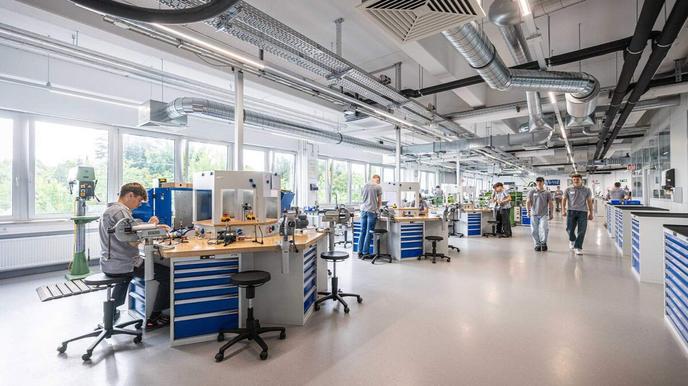
16 May 2025
Inauguration of the Brasseler Academy in Lemgo: Promoting talent. Shaping the future.
The family-owned company Brasseler has completed and officially opened its new training center at the company headquarters in Lemgo according to plan. The “Brasseler Academy” provides a modern learning environment geared towards contemporary, practical training. The center’s guiding principle “Promoting talent. Shaping the future.” illustrates Brasseler’s commitment to opening up prospects for young people and sustainably strengthening the further development of the company and the region.
27 March 2025
The medical technology group Brasseler publishes preliminary results for the financial year 2024
The medical technology group Brasseler presents its preliminary results for the financial year 2024. Despite a challenging economic environment, the company was able to achieve a 2 % increase in sales compared to the previous year. This corresponds to net sales of around 233 million euros. While conditions remain challenging due to rising costs and increasing international competition, Brasseler continues to invest strategically and intensify its collaboration with customers and product users.

20 March 2025
Brasseler at my job OWL – Perspectives for the Future
Why is Brasseler worth considering as an employer? Because we offer perspectives for the future – for apprentices, career starters, and professionals. At the “my job OWL” fair, we had insightful conversations with interested candidates about exactly that.
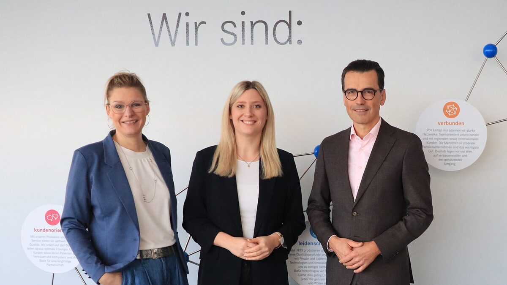
11 February 2025
Brasseler Becomes one of the New Main Sponsors of Lemgo Marketing
As a family-owned company with deep roots in Lemgo, we take responsibility for our region. In 2025, we will support numerous city festivals and events as a main sponsor of Lemgo Marketing, enriching life in our city.
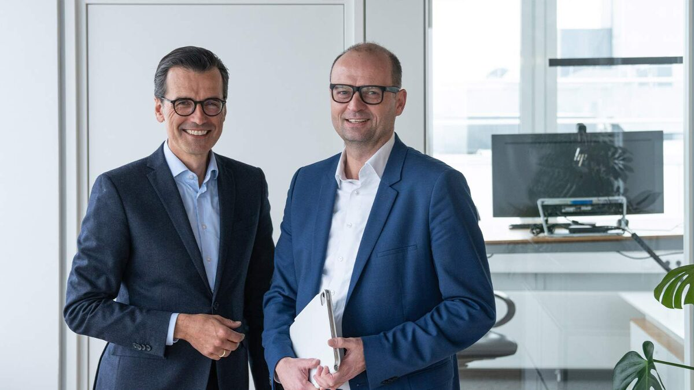
23 January 2025
Brasseler strengthens its international presence – New milestones in the dental sector
The medical technology group Brasseler is consistently driving forward its global growth strategy. With the establishment of a new sales company in the UK and the opening of the Komet Academy in Italy, the company is starting the new year with significant milestones in the dental sector. These initiatives illustrate how Brasseler is strengthening its proximity to customers worldwide under the brand name Komet Dental and positioning itself in the field of continuing education.
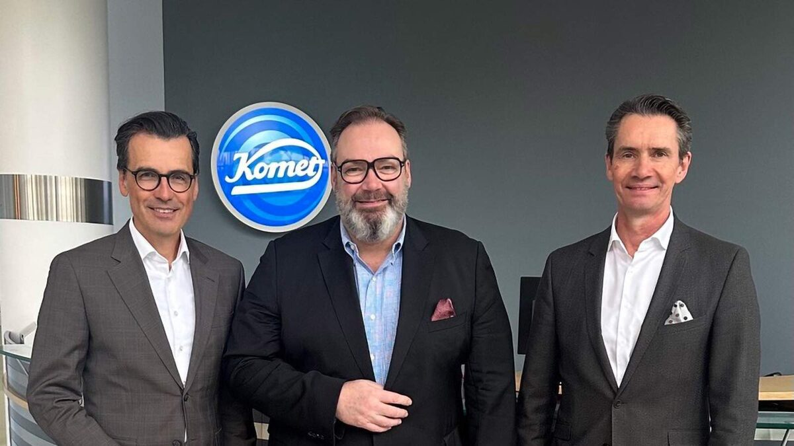
17 January 2025
Dr. Markus Heibach, Managing Director of the VDDI e. V., visits Brasseler
We had the pleasure of welcoming Dr. Markus Heibach, Managing Director of the German Dental Industry Association. The occasion was the handover of responsibility for cooperation from Klaus Rübesamen to Stephan Köhler.
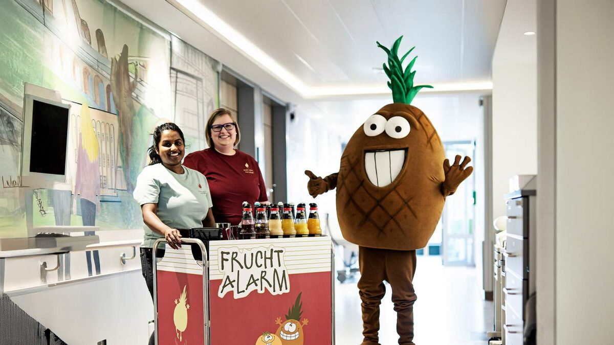
23 December 2024
Donations Instead of Presents – Brasseler Wishes You a Merry Christmas
The holiday season is a special time to pause and give back. As in previous years, we are supporting a meaningful project in our region with a donation.
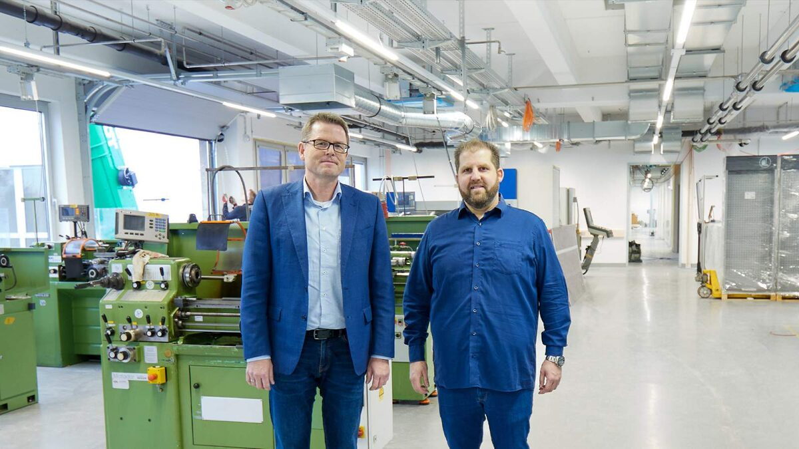
18 December 2024
New training and further education center to be built at Brasseler in Lemgo
The family-owned company Brasseler is building a modern training and further education center at its site in Lemgo. An existing building area is being extensively converted for this purpose. Construction work is already in full swing. The building is scheduled for completion in the first quarter of 2025. This future-oriented project represents a significant step towards a modern and innovative learning environment within the company.
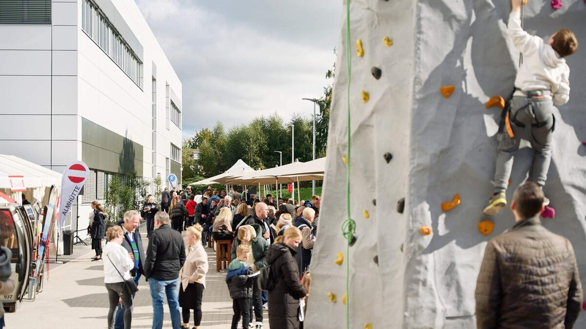
09 October 2024
Together into the future: Brasseler celebrates Family Days 2024
Around 3,500 employees, pensioners and their families visited Brasseler’s Family Days on 5 and 6 October. On both days, the company premises in Lemgo were transformed into a colorful world of adventure, inviting the young and the young at heart to marvel and join in on all the fun. Visitors experienced the medical technology company first-hand, and many wonderful memories were created with colleagues and their families.

22 August 2024
The Medical Technology Group Gebr. Brasseler publishes half-year results 2024
In its anniversary year 2023, the Brasseler Group achieved a record result with sales growth of 6 % and consolidated sales of EUR 226.3 million. In the first half of 2024, turnover almost stagnated at the previous year’s level. Developments in the business segments vary.
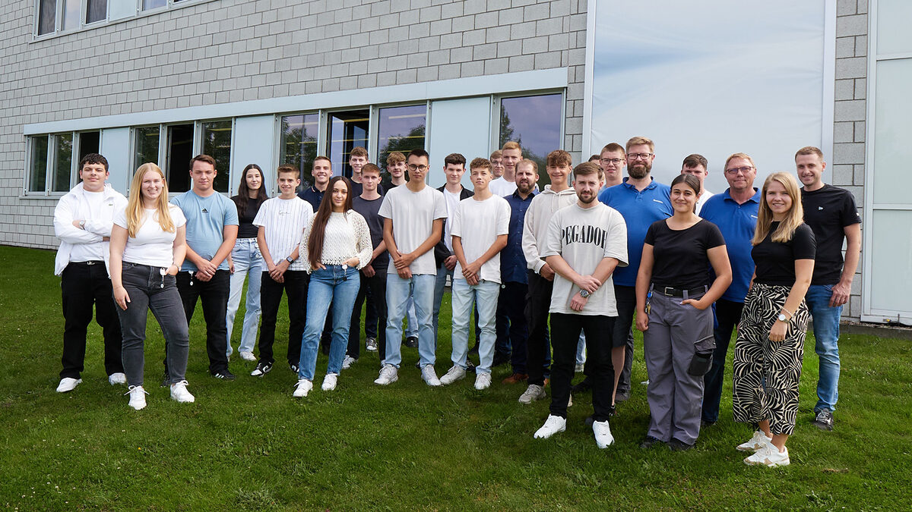
19 August 2024
Green light for the next generation of trainees who are now starting their vocational training at Brasseler
Brasseler welcomed 20 new trainees to its Lemgo site. On August 1st, 13 apprentices in the industrial-technical sector, 6 trainees in the administrative section and 1 student following a work-study program started their careers.
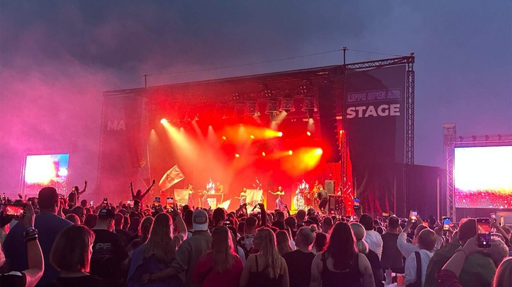
05 August 2024
A Fantastic Weekend at Lippe Open Air
What an amazing festival weekend! We are thrilled by the lively atmosphere and the energy that Lippe Open Air has once again brought to our region. One thing is certain: Lippe knows how to celebrate!
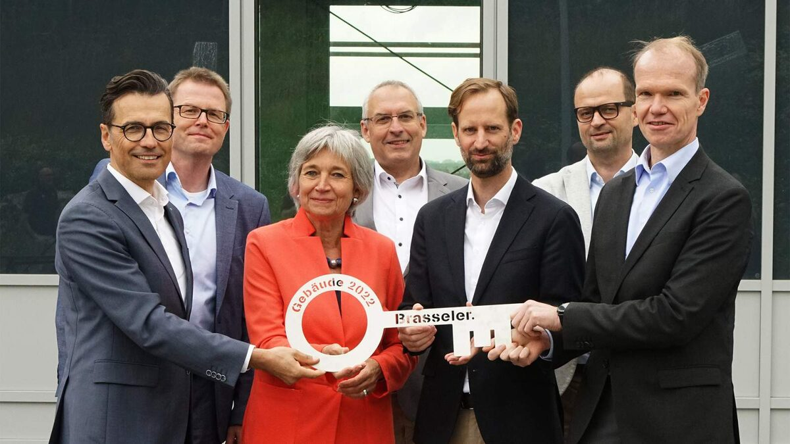
25 July 2024
Handing over the key to the new building
The intensive planning and construction phase of our new building with over 6,000 square metres of floor space has been completed to such an extent that the relocation of the production machines can begin.
16 July 2024
The Medical Technology Group Gebr. Brasseler Lemgo appoints a new Managing Director
The Medical Technology Group Gebr. Brasseler Lemgo announces the appointment of Mr. Alexander Bartel as Managing Director as of June 1st, 2024.
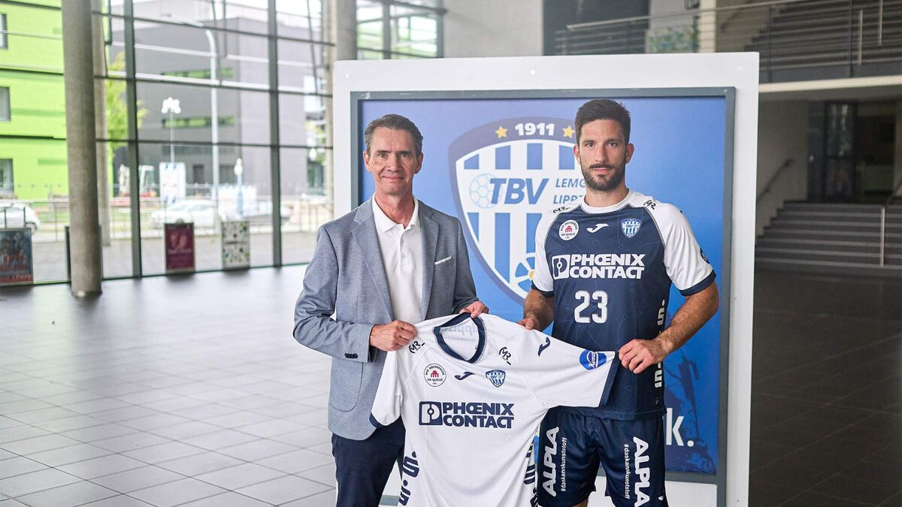
15 July 2024
Brasseler Significantly Expands Engagement with TBV Lemgo Lippe
We are proud to further expand our long-standing Partnership as a co-sponsor with TBV Lemgo Lippe and enter the next season together! For over 20 years, our family-owned company Brasseler has supported the Lippe-based handball Bundesliga team.
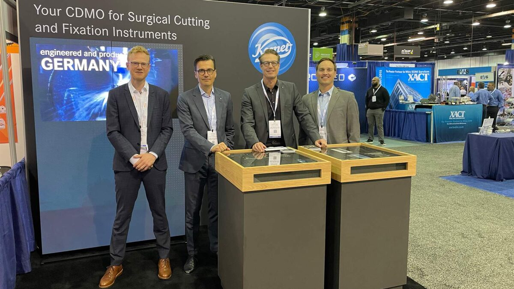
21 June 2024
Erfolgreiche Messe für Komet Medical
Educate. Connect. Empower. Die OMTEC Messe in Chicago ist weltweit die einzige MedTech Konferenz, die sich ausschließlich an die globale Orthopädiebranche richtet.
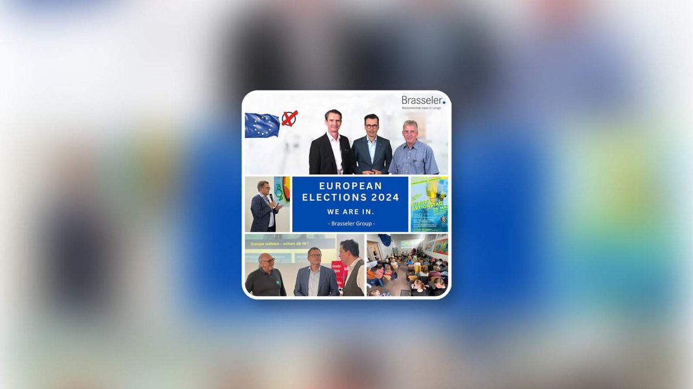
05 June 2024
European elections | Together for a strong Europe
The family-owned Brasseler company has always been committed to the community – locally, regionally, nationally and internationally.
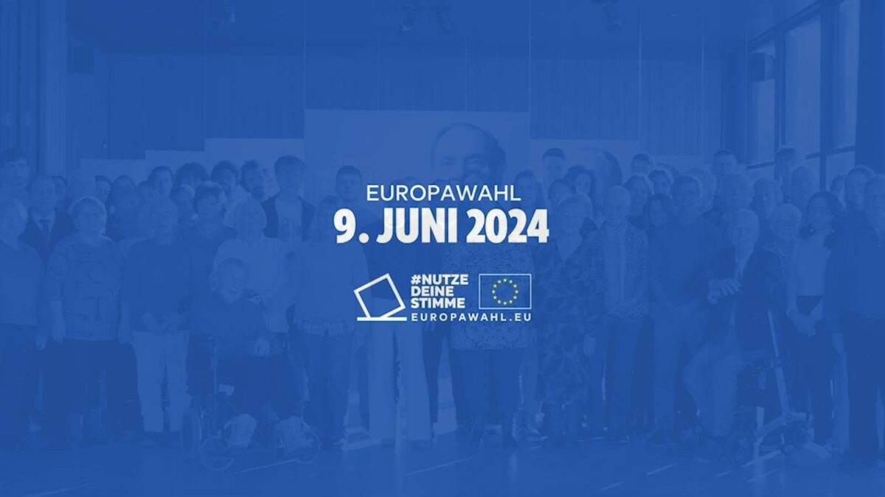
27 May 2024
European elections | This concerns all of us
In the European elections on June 9, we – each and every one of us – will lay the foundation for our future in Europe and in Germany.
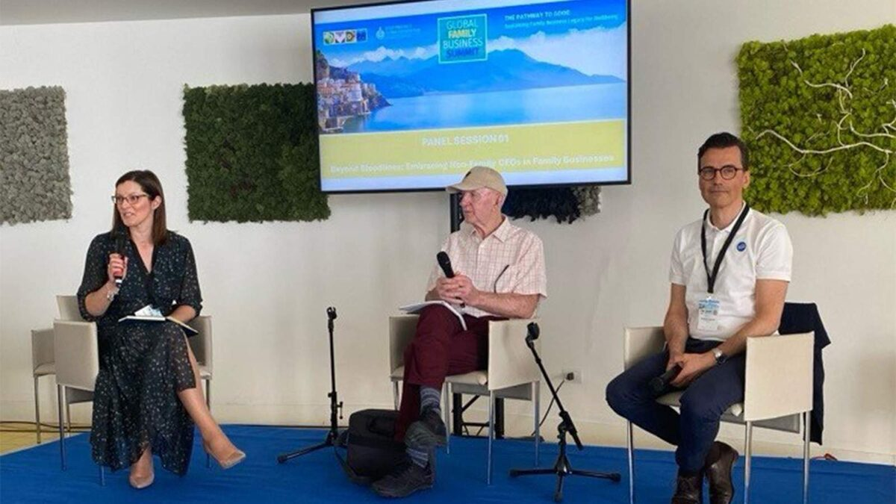
22 May 2024
Panel discussion | Beyond Bloodlines
How can the constellation of owner family and entrepreneurship be successfully shaped with a “non-family managing director”?
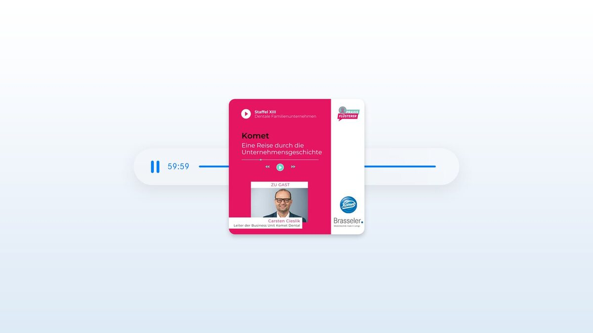
17 May 2024
Podcast | Dental family businesses
In der nächsten Episode des Praxisflüsterer-Podcast „Brasseler / Komet – eine Reise durch die Unternehmensgeschichte“ interviewt Christian Henrici Carsten Cieslik, Leiter der Business Unit Komet Dental.

07 May 2024
Brasseler donates dental instruments to South Africa
As a MedTech company, we want to contribute to improving healthcare worldwide. We firmly believe that our commitment has a long-term positive impact on global society.
03 May 2024
Podcast | Dental family businesses
We were guests on two episodes of the podcast “Praxisflüsterer” by and with Christian Henrici.
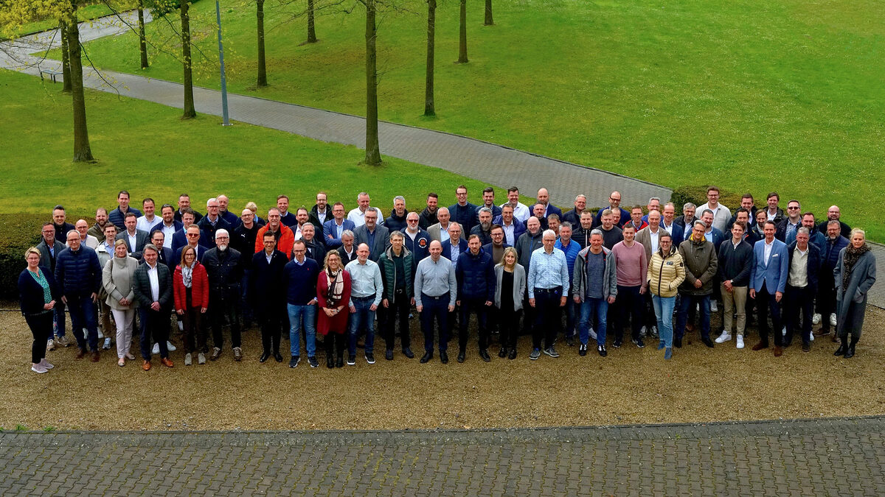
30 April 2024
Success, strategy and leadership excellence
Last Wednesday, all managers of the Brasseler company met at the Phoenix Contact Arena in Lemgo.
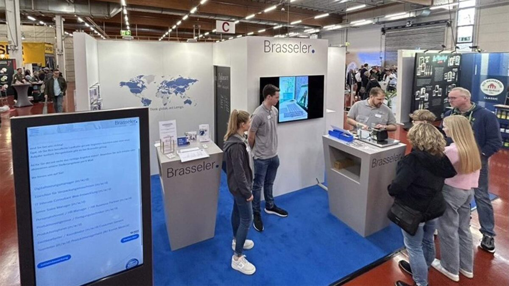
10 April 2024
Participation in the “MyJob” fair
What opportunities does Brasseler offer as an employer? These and many other questions were answered at the “MyJob” fair. We took the opportunity to explain our apprenticeships and current vacancies to interested pupils, specialists and managers.

28 March 2024
The Medical Technology Group Gebr. Brasseler publishes its preliminary results for the financial year 2023
The medical technology group Gebr. Brasseler presented its preliminary results for the financial year 2023, which also marked the company’s 100th anniversary.
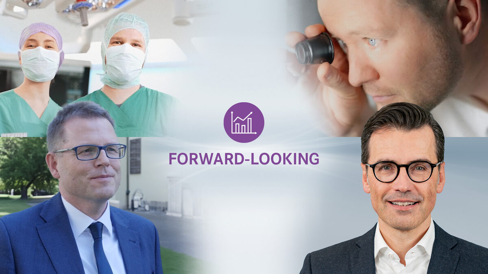
18 March 2024
We act with foresight
“We keep an eye on developing trends and view digitalization as an opportunity to improve our processes and permanently optimize our customers’ daily work.”
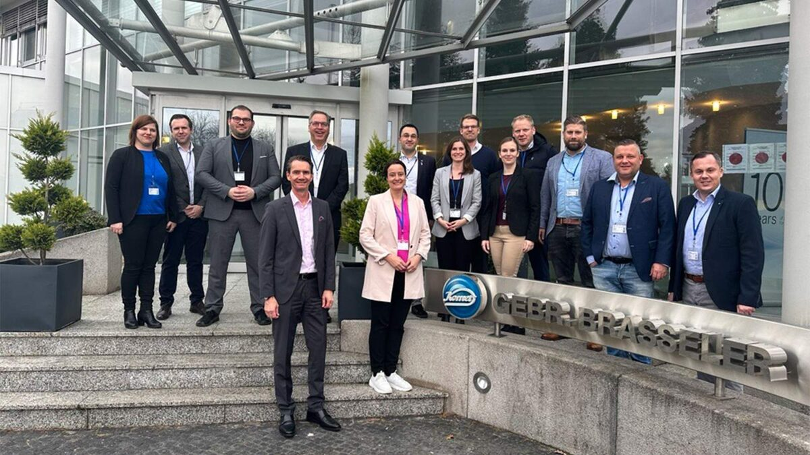
12 March 2024
District President and business juniors visit Brasseler
The District President of Detmold, Anna Katharina Bölling, was recently a guest at Brasseler at the invitation of the IHK Lippe zu Detmold Junior Chamber of Commerce. We support this format of networking between young entrepreneurs and managers with politicians, because it’s only in a joint dialog with various stakeholders that we can drive the economy in OWL forward in a sustainable manner.
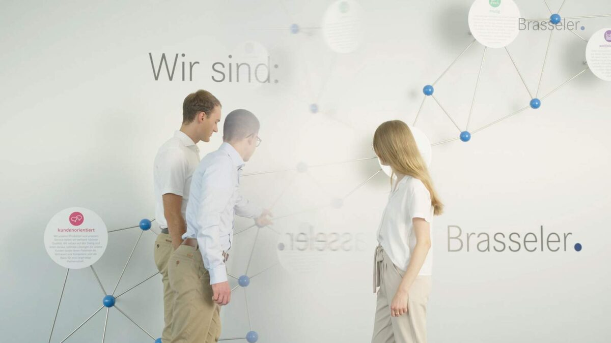
04 March 2024
Brasseler rolls out employee and management guidelines
“The employee and management guidelines concretize our values and show what they mean for our cooperation in everyday working life.” (Bjoern Hartmann, HR Director)
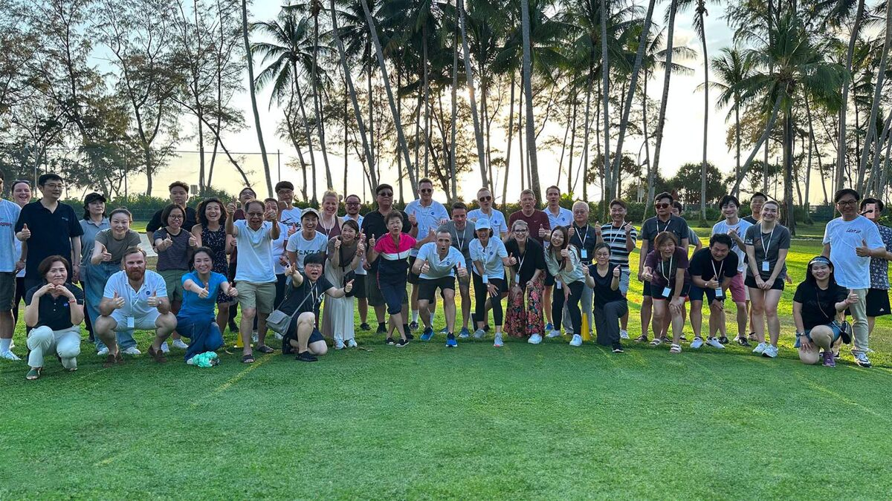
29 February 2024
Internationalization | APAC Dealer Meeting
“In love with better” – This was the motto of the first APAC Dealer Meeting of our largest business unit Komet Dental, which took place in Phuket, Thailand these days. The event is an important building block for shaping our international growth strategy in Asia and the Pacific in close cooperation with our local partners.
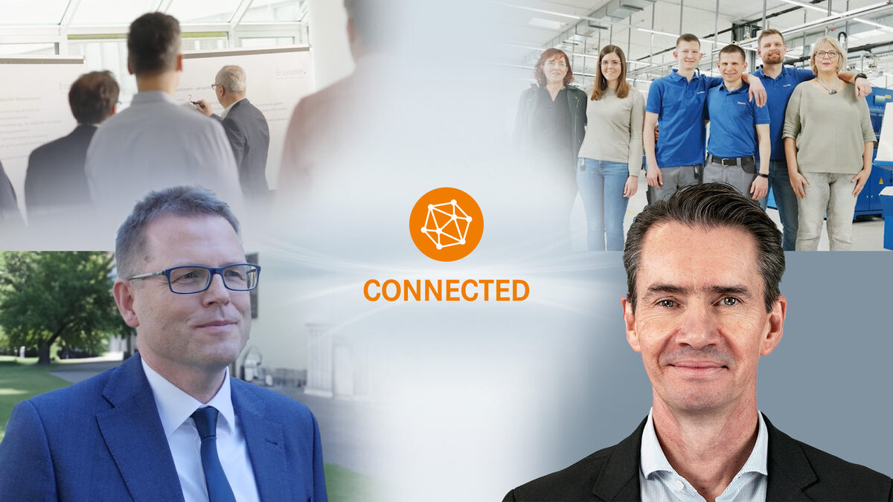
19 February 2024
What does our value “Connected” mean?
Our corporate culture and values guide our position, decisions and actions at Brasseler. Values have played a key role since our company was founded, and each generation translate them into contemporary terms. Our five values were developed in collaboration with employees.
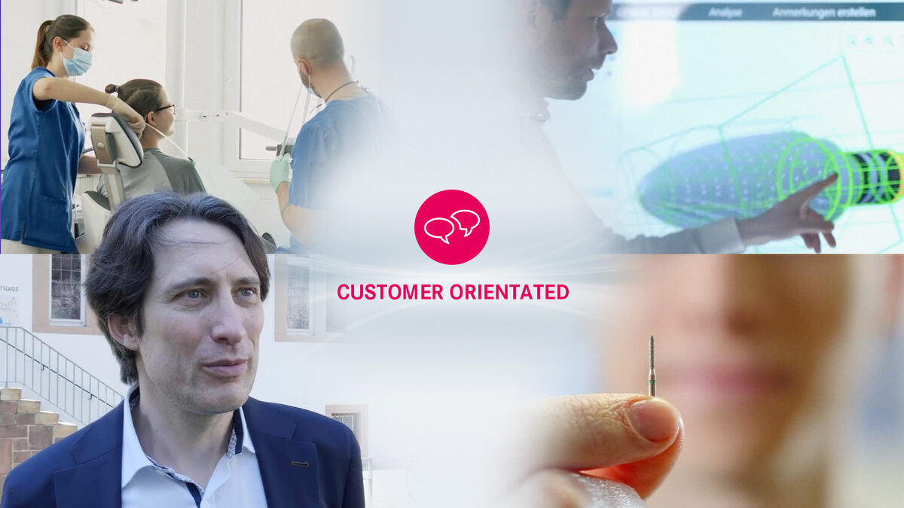
14 February 2024
Values are our foundation
Our values reflect our understanding of a family business. They are an essential part of our corporate philosophy and form the basis of our actions.
07 February 2024
The Gebr. Brasseler GmbH & Co. KG group Lemgo announces a realignment in the divisions Komet Dental and Komet Medical
The medical technology group Gebr. Brasseler Lemgo announces a change of management in the Dental and Medical divisions at the beginning of the year. The changes are the result of an organizational realignment: the Komet Medical business unit will be strategically expanded to include Dental Implantology expertise. The “Custom Made” business unit, which was previously responsible for this field, will be merged with the Medical business unit. The aim of the family-owned company is to bundle core competencies, promote the positive market development in bone surgery and dental implantology and respond effectively to changing customer needs.
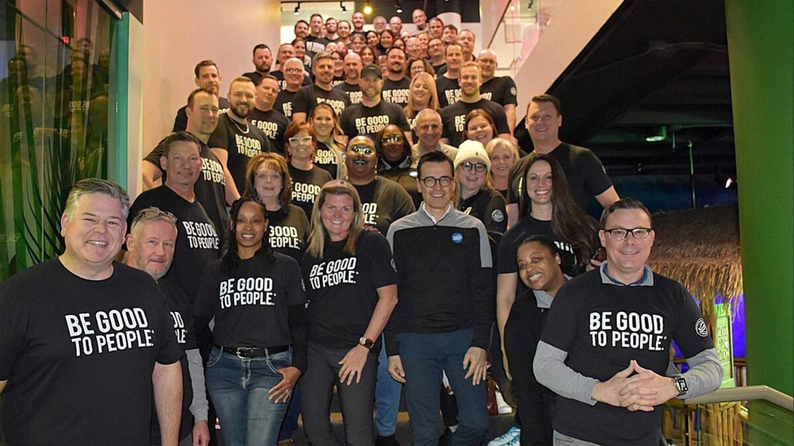
25 January 2024
National Sales Meeting Komet USA
“𝗟𝗲𝘁’𝘀 𝗮𝗰𝗵𝗶𝗲𝘃𝗲 𝗴𝗿𝗲𝗮𝘁 𝘁𝗵𝗶𝗻𝗴𝘀 𝘁𝗼𝗴𝗲𝘁𝗵𝗲𝗿!” – that’s how Stephan Koehler, Chairman of the Management Board, opened his speech at this year’s Komet USA National Sales Meeting in Charlotte last week. Defining goals together, implementing the growth strategy and driving international success – this year’s kick-off event was an important milestone.

20 December 2023
Happy Festive Season
An eventful year is drawing to a close. We would like to express our sincere thanks for accompanying us through our anniversary year, as 100 𝘠𝘦𝘢𝘳𝘴 𝘰𝘧 𝘗𝘳𝘦𝘱𝘢𝘳𝘢𝘵𝘪𝘰𝘯 𝘧𝘰𝘳 𝘛𝘰𝘮𝘰𝘳𝘳𝘰𝘸 was an important milestone for us.

11 December 2023
Our path to a world market leader in the dental industry
In the latest episode of the “Insights Brasseler” series, our Managing Director Klaus Ruebesamen explains how we developed with our product brand Komet into a leading global brand.

13 November 2023
Together in Lemgo and the region
For many decades, we have been rooted in Lemgo and has grown to become one of the largest regional employers.

06 November 2023
Topping-out ceremony for new building in Lemgo
On October 20, we reached another important milestone this year: the topping-out ceremony for our new company building “Building 2022” in Lemgo.

19 October 2023
At Brasseler, people make the difference.
Today we introduce you to the next topic in our Insights Brasseler-series.
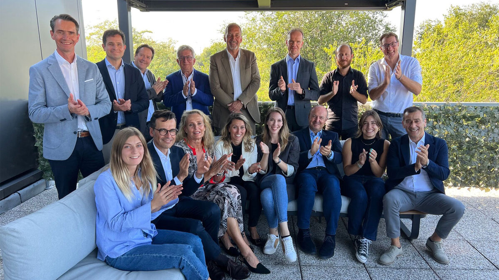
26 September 2023
Visit to Komet Italia
Our shareholders, the members of our advisory board and our management, Stephan Köhler, Klaus Rübesamen and Markus Trachernach, are visiting our branch Komet Italia in Verona this week. The visit is to express our recognition of the great commitment shown by our Italian colleagues and their excellent contribution to the success of our Group.

20 September 2023
Brasseler launches content campaign “Insights Brasseler”
In the coming weeks and months, we will dive deeper into the world of Brasseler and give you special insights into our company.
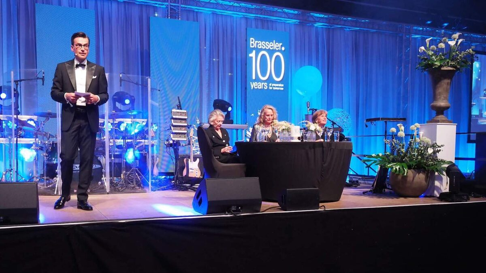
04 September 2023
Event Film 100 Years
What unites a hundred-year success story with the future? Our Brasseler anniversary year.
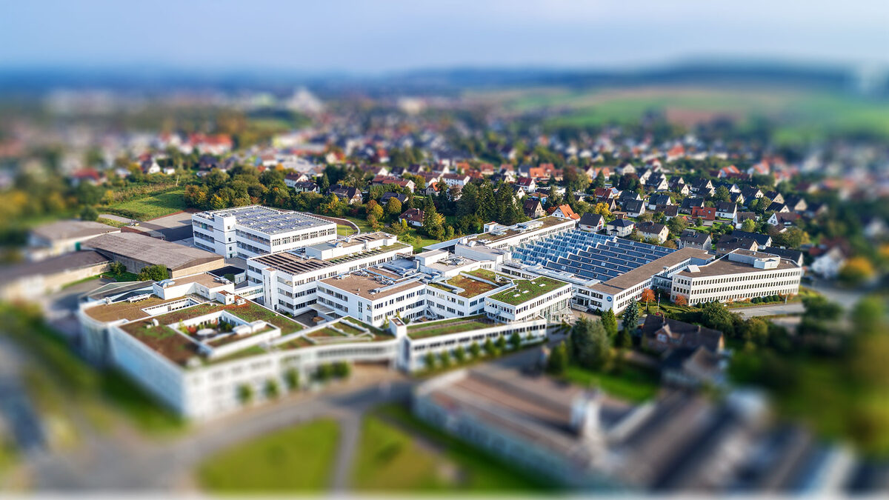
25 August 2023
Half-year results 2023 and investment plans for Lemgo
The medical technology Gebr. Brasseler Group presents its results for the first half of 2023.
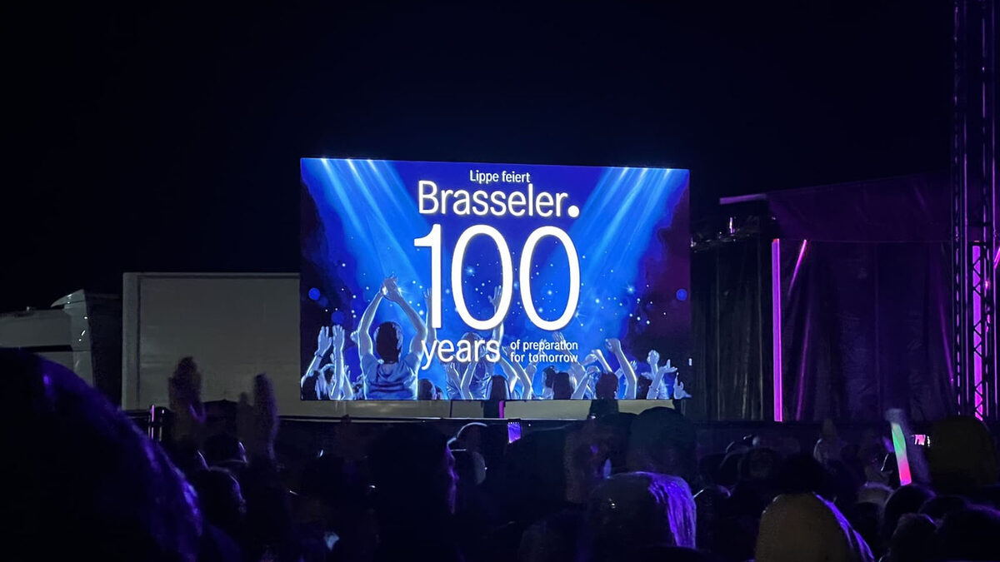
09 August 2023
Brasseler sponsors main act Nico Santos at Lippe Open Air
It was an exciting weekend – and another highlight in our 100th anniversary year!
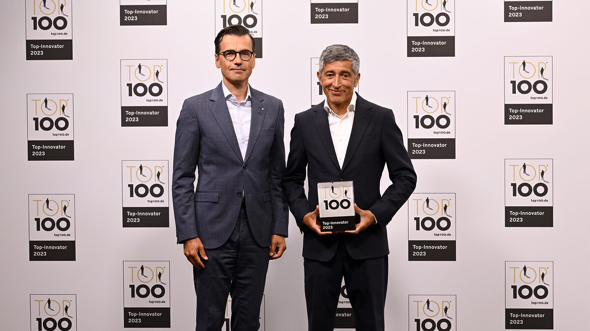
23 June 2023
TOP 100 award ceremony: Brasseler accepts award
We have been awarded the TOP 100 innovation seal for the second time and once again, we count among the most innovative medium-sized companies in Germany in 2023!
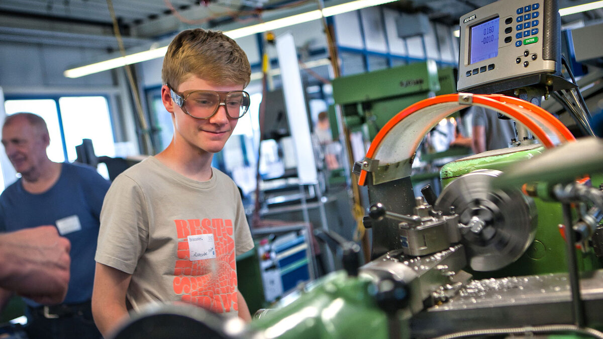
19 June 2023
Brasseler inspires young people at information day about apprenticeships
On Friday, June 16, we opened our doors to give schoolchildren from the region a comprehensive insight into the wide range of apprenticeships in our industry. The info day was a great success – We welcomed numerous interested young people and their parents to the Lemgo company premises.
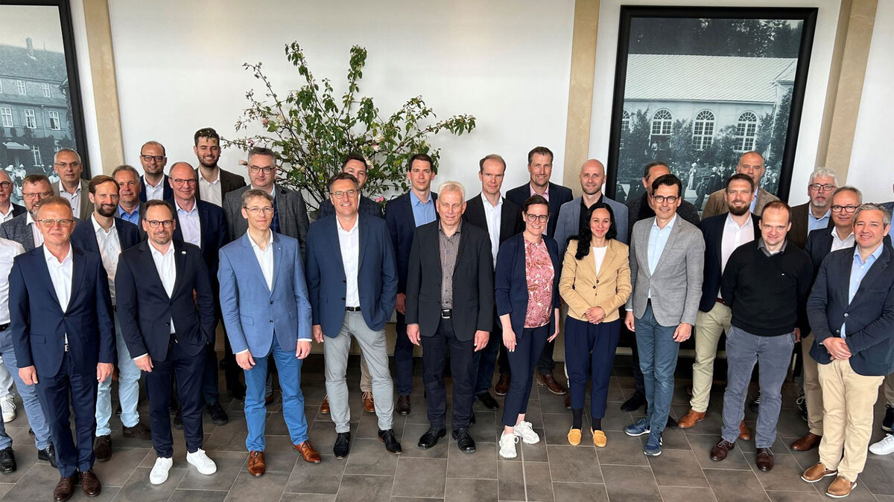
24 May 2023
Extended management team lays foundation for further healthy growth until 2026
A successful company needs clear goals, good strategies and – we are particularly convinced of this – open exchange. To optimize the existing and shape the future. To lead, motivate and decide.
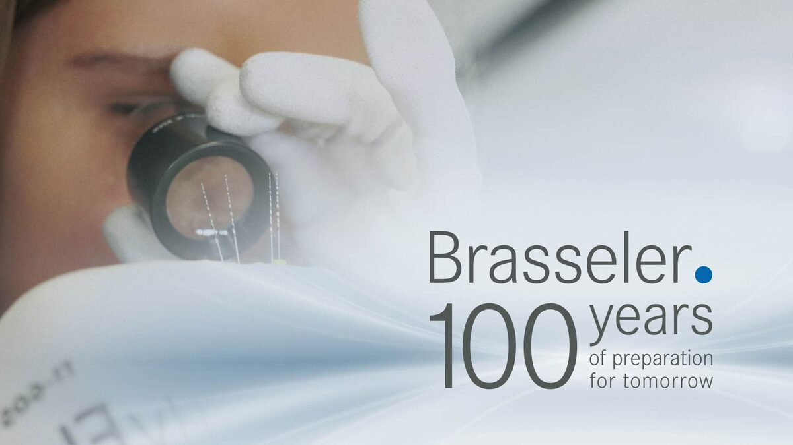
17 May 2023
Brasseler releases new image film
Ready to discover the world of our company? We are pleased to present our new image film today and take you on an emotional journey full of innovation, passion and success. Our image film shows you what drives us and sets us apart from the rest.
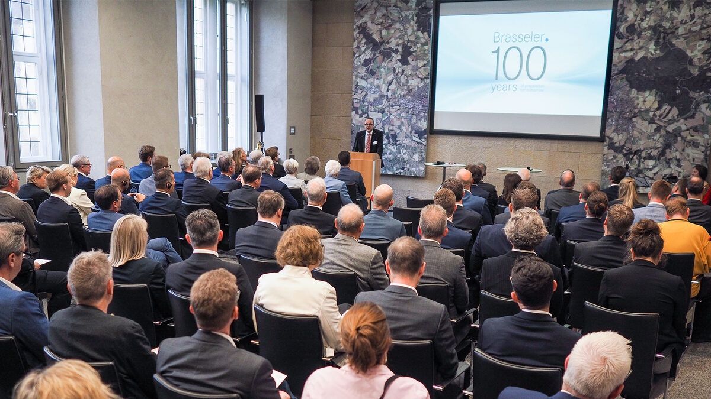
15 May 2023
Big anniversary: Brasseler celebrates 100 years
“100 Years of Preparation for Tomorrow” – Under this motto, Brasseler has come up with a multitude of ways to celebrate our anniversary year: celebrations at the different company locations all over the world, fundraising campaigns, sponsoring a music festival in OWL, a new image film, an anniversary celebration with themed worlds from 100 years of company history, and the ceremony in the presence of the owner family.
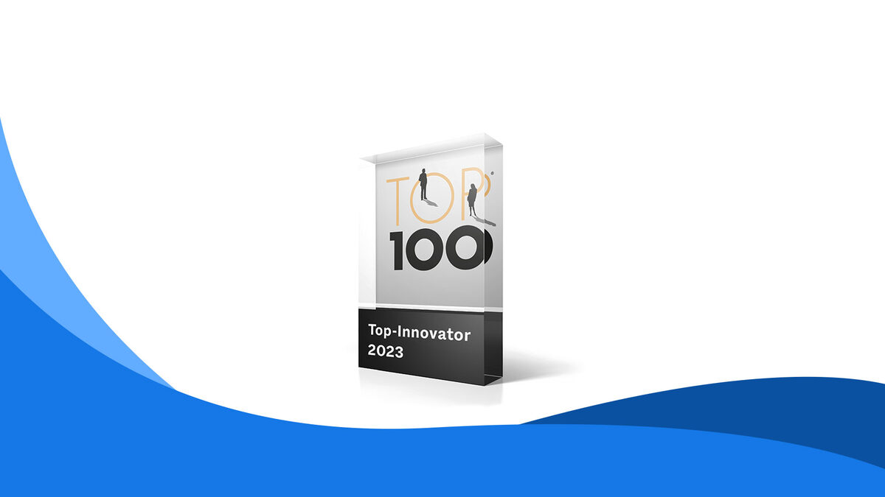
08 May 2023
Brasseler again receives award for innovation work
With the award as TOP 100-Innovator, we once again count among the most innovative medium-sized companies in Germany in 2023. “Innovations are part of our corporate DNA and the key to long-term success,” says Stephan Köhler, spokesman for the management board.
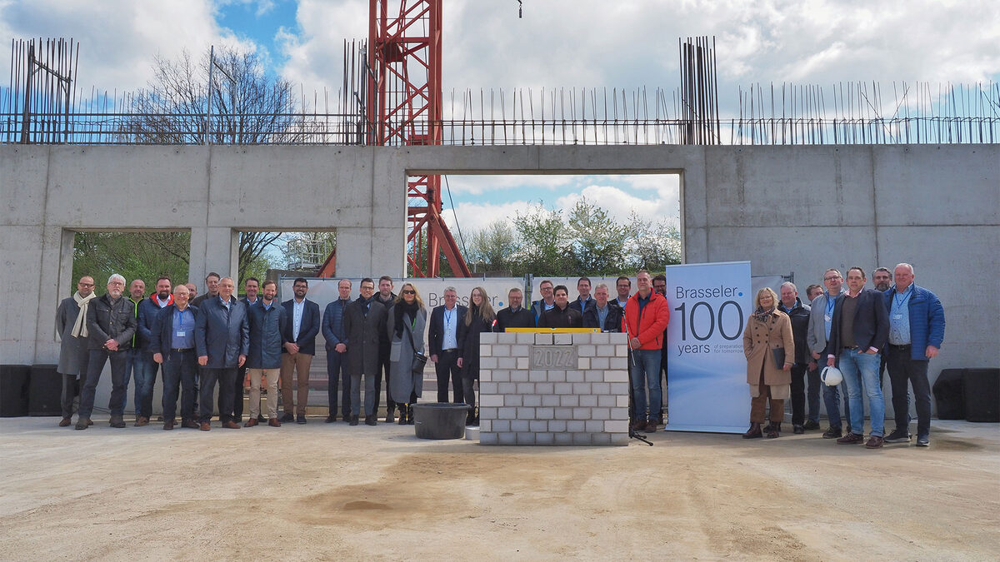
27 April 2023
Ceremonial laying of the foundation stone: Expansion of the Brasseler headquarters in Lemgo
On April 27, 2023, we laid the foundation stone for another building on our Brasseler Campus in Lemgo. In the presence of Anke Niehus, principal shareholder and representative of the owner family, architect Oliver Stüwe, as well as our management and employees, we celebrated this important milestone, which illustrates the strategic development of value creation at the Lemgo site.

06 April 2023
Promoting digital skills: Brasseler hosts PopUp Campus of the Digital Business University
In cooperation with the DBU (Digital Business University of Applied Sciences), we at Gebr. Brasseler offer the opportunity to train as digital experts. Our sponsorship program supports selected employees to study part-time – virtually and in face-to-face events. From March 30 to April 01, we hosted the DBU PopUp Campus on “Leadership in the Digital Age” and welcomed students and companies from all over OWL to our headquarters in Lemgo. The PopUp Campus is part of the classroom events of the part-time, semi-virtual courses of study that we offer as part of our HR development scheme.

02 March 2023
Brasseler provides 100,000 euros in emergency aid for victims of earthquake disaster
Lemgo, 03.03.2023 – The medtech company Gebr. Brasseler GmbH & Co. KG has donated 100,000 euros in emergency aid for the earthquake victims in Turkey and Syria. In addition, Brasseler is doubling the donations of its employees.
Press Contact
Melanie Köhler
Corporate communication
Phone +49 (0) 160 3447748
presse@brasseler.de